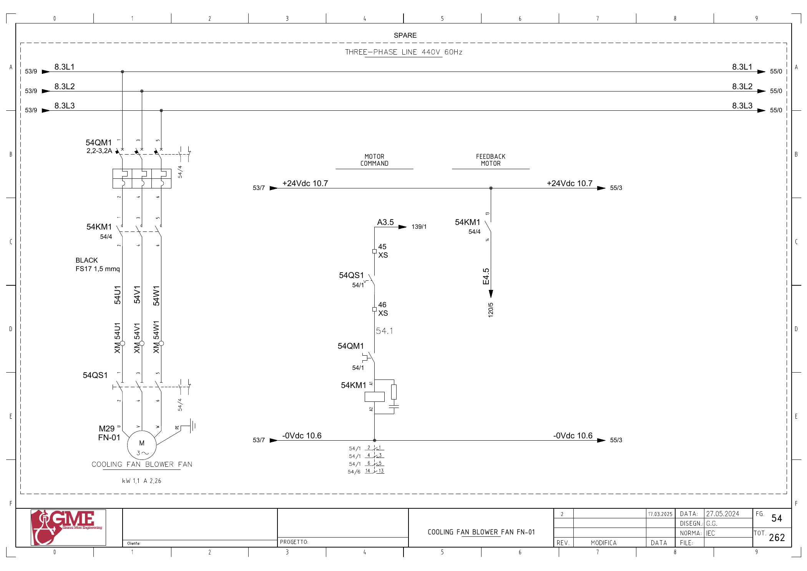

FN01-FAN · FN01 모터 냉각팬 예비 전기 회로 추적
원본 전기도면을 시각 확인한 정적 회로 해석입니다. 현재 배선·입력 극성·파라미터와 현장 측정은 미확인입니다. 전기 작업은 승인된 현장 절차와 자격 범위에서 수행합니다.
1. 도면의 구성과 진단 경계
FG54 전체가 SPARE 점선 영역입니다. M29 냉각팬(도면1.1kW·2.26A), 54QM1·54KM1·54QS1이 표시됩니다.
FN01 주팬의 Q2.7·I3.5와 구분합니다. 예비 회로 표기, 백업 태그 존재, 현장 설치·운전을 서로 다른 확인 상태로 관리합니다.
추가 시공도면 · 접속함·케이블·배관 경로 — 승인·현재 설치는 확인 전입니다.
2. 예비 냉각팬 기동
A3.5 ↔ 백업 %Q3.5 / star fan fn01 · FG54 · PDF 55
- A3.5 (FG139/1)
- XS:45 → 54QS1 보조접점 → XS:46
- 54QM1 보조접점
- 54KM1 코일 A1→A2 / 0Vdc10.6
전달·사용 위치: 해당 출력의 현재 쓰기·호출과 실제 설치 상태를 확인합니다. 주팬 운전 로직의 필수 장치로 자동 지정하지 않습니다.
진단 판단: 예비 회로를 기동 시험할 대상으로 확정하지 않습니다. 현장 설치·전원·배선·승인된 사용 정책을 먼저 식별합니다.
원본 심볼 직접 참조: 복원 LAD에서 이 이름의 직접 참조는 찾지 못했습니다. 내부 Inputs 등의 별도 전달·미해석 참조·현재 프로그램은 확인 전입니다.
3. 예비 접촉기 응답
E4.5 ↔ 백업 %I4.5 / fn01f_fbk · FG54 · PDF 55
- +24Vdc10.7 → 54KM1 보조접점13→14
- E4.5 → FG120/5
전달·사용 위치: 접촉기 응답의 내부 전달과 주팬 연동 사용 여부를 확인합니다.
진단 판단: 태그 존재만으로 입력을 정상값1로 고정하거나 주팬 고장 원인으로 단정하지 않습니다.
원본 심볼 직접 참조: 복원 LAD에서 이 이름의 직접 참조는 찾지 못했습니다. 내부 Inputs 등의 별도 전달·미해석 참조·현재 프로그램은 확인 전입니다.
위 직접 참조는 복원 원본의 같은 심볼명 위치입니다. 읽기·쓰기 역할, 현재 호출, 현장 사용을 함께 확정한 표는 아닙니다. 원본의 simulation 블록 참조가 있더라도 이번 작업에서 가상 실행·개발·시험은 진행하지 않았습니다.
원본 PLC와 연결
남은 확인과 기록
- 실제 장치·코일·PLC 입력 사용과 SPARE 표기를 대조
- FN01-FAN 태그의 읽기·쓰기와 운전 정책 확인
도면을 함께 확인
FG 54 · 해당 도면 보기

| 기록 항목 | 내용 |
|---|---|
| 현장 식별 | 설비 ID / 반·단자대 / 모터·인버터 명판 / 도면 개정 |
| 신호 구간 | PLC 명령 / 단자 / 직렬 접점 / 릴레이 / DI / 응답 접점 / 입력 / 내부 DB |
| 관찰 결과 | 시각 / 운전 모드 / 기준값의 근거 / 관찰값 / 최초 불일치 구간 |
| 복구 확인 | 원인·조치 / 원인 해제 / Reset / 재요청 / 주변 설비 영향 |